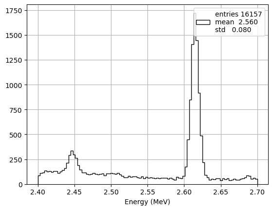

Open the box
Contents
Open the box#
Objetives#
Access the full data set and estimate the number of signal events
Consider the case of a counting experiment, estimate the number of signal events in the RoI, \(n^{\beta\beta}_{RoI}\).
Estimate the \(n^{\beta\beta}_E\) events in the enlarged energy window.
In both cases set a limit or a confidence interval for \(\mathcal{T}_{1/2}^{\beta\beta0\nu}\)
Compute also the p-value of the null hypothesis
Analysis#
%matplotlib inline
%load_ext autoreload
%autoreload 2
Importing modules#
import numpy as np
import tables as tb
import pandas as pd
import matplotlib.pyplot as plt
import scipy.constants as constants
import scipy.stats as stats
import scipy.optimize as optimize
import warnings
warnings.filterwarnings('ignore')
# REMEMBER TO ADD Your Fanal FOLDER TO PYTHONPATH
import os
import sys
rootpath = os.getcwd()[:-15]
print('add path to PYTHONPATH : ', rootpath)
sys.path.insert(0, os.path.abspath(rootpath))
add path to PYTHONPATH : /Users/hernando/work/docencia/master/Fisica_Particulas/USC-Fanal-v2/
import core.pltext as pltext # extensions for plotting histograms
import core.hfit as hfit # extension to fit histograms
import core.efit as efit # Fit Utilites - Includes Extend Likelihood Fit with composite PDFs
import core.utils as ut # generic utilities
import ana.fanal as fn # analysis functions specific to fanal
import collpars as collpars # collaboration specific parameters
pltext.style()
Main Parameters#
coll = collpars.collaboration
sel_ntracks = collpars.sel_ntracks
sel_eblob2 = collpars.sel_eblob2
sel_erange = collpars.sel_erange
sel_eroi = collpars.sel_eroi
print('Collaboration : {:s}'.format(coll))
print('number of tracks range : {:6d}'.format(sel_ntracks))
print('Blob-2 energy range : {:6.3f} MeV'.format(sel_eblob2))
print('Energy range : ({:6.3f}, {:6.3f}) MeV'.format(*sel_erange))
print('Energy RoI range : ({:6.3f}, {:6.3f}) MeV'.format(*sel_eroi))
Collaboration : new_beta
number of tracks range : 1
Blob-2 energy range : 0.400 MeV
Energy range : ( 2.400, 2.700) MeV
Energy RoI range : ( 2.430, 2.480) MeV
n_Bi_RoI = collpars.n_Bi_RoI
n_Tl_RoI = collpars.n_Tl_RoI
n_Bi_E = collpars.n_Bi_E
n_Tl_E = collpars.n_Tl_E
print('Number Bi events in RoI = {:6.3f}'.format(n_Bi_RoI))
print('Number Tl events in RoI = {:6.3f}'.format(n_Tl_RoI))
print('Number Bi events in E = {:6.3f}'.format(n_Bi_E))
print('Number Tl events in E = {:6.3f}'.format(n_Tl_E))
Number Bi events in RoI = 21.775
Number Tl events in RoI = 4.007
Number Bi events in E = 25.287
Number Tl events in E = 150.775
Access the data#
# set the path to the data directory and filenames
dirpath = rootpath+'/data/'
filename = 'fanal_' + coll + '.h5'
print('Data path and filename : ', dirpath + filename)
mcbi = pd.read_hdf(dirpath + filename, key = 'mc/bi214')
mctl = pd.read_hdf(dirpath + filename, key = 'mc/tl208')
datab = pd.read_hdf(dirpath + filename, key = 'data/blind')
datar = pd.read_hdf(dirpath + filename, key = 'data/roi')
data = pd.concat((datab, datar)) # concatenate blind and roi-data into one data DF
print("Total events in data set = {:d}".format(len(data)))
Data path and filename : /Users/hernando/work/docencia/master/Fisica_Particulas/USC-Fanal-v2//data/fanal_new_beta.h5
Total events in data set = 22063
mask1 = (data.E >= sel_erange[0]) & (data.E < sel_erange[1])
#mask2 = mask1 & (data.num_tracks <= sel_ntracks)
#mask3 = mask2 & (data.blob2_E >= sel_eblob2)
#mask3 = mask3 & (data.E >= sel_eroi[0]) & (data.E < sel_eroi[1])
pltext.hist(data.E[mask1], 100);
plt.xlabel("Energy (MeV)");
